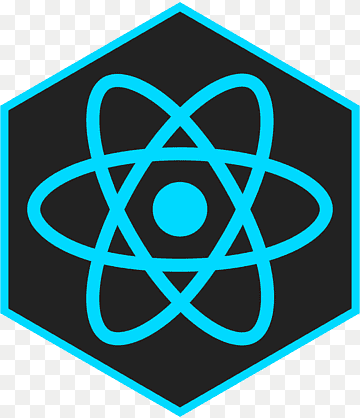

Node.js, React.js y Next.js
Node.js

Node.js es un entorno de ejecución para JavaScript que permite ejecutar código fuera del navegador. Está diseñado para aplicaciones en red escalables y es utilizado para crear aplicaciones rápidas y ligeras.
Características principales
- Asíncrono y orientado a eventos: Ideal para manejar múltiples solicitudes sin bloquear el servidor.
- Multiplataforma: Funciona en Windows, Linux y macOS.
- Escalable: Perfecto para aplicaciones de tiempo real como chats o servidores de streaming.
Arquitectura de Node.js
Node.js usa una arquitectura de Single Threaded Event Loop para manejar múltiples clientes con un solo hilo principal, delegando tareas de I/O a un pool de hilos y asegurando la eficiencia en aplicaciones con muchas conexiones simultáneas.
Archivos importantes
- package.json: Describe el proyecto y lista las dependencias.
- package-lock.json: Registra las versiones exactas de las dependencias instaladas, asegurando la misma configuración en cualquier entorno.
Casos de uso de Node.js
- APIs REST: Ideal para crear APIs rápidas y ligeras.
- Aplicaciones en tiempo real: Como chats o videojuegos multijugador.
- Automatización de tareas: Scripts para automatizar procesos con JavaScript.
- Microservicios: Perfecto para dividir sistemas complejos en partes más manejables.
¿Por qué elegir Node.js?
- Rapidez: Gracias al motor V8, el código JavaScript se ejecuta extremadamente rápido.
- Escalabilidad: Maneja fácilmente cientos de miles de conexiones.
- Ecosistema: npm ofrece una solución casi para cualquier problema.
React.js

React nos permite construir interfaces de usuario dividiendo la aplicación en componentes reutilizables y conectándolos para lograr una experiencia interactiva y fluida.
Conceptos Clave en React
- Componentes: Son piezas reutilizables de la interfaz, cada una encargada de una responsabilidad.
- Flujo de Datos: Los datos fluyen en una única dirección, de los componentes padres hacia los hijos.
- Estado: Representa información que puede cambiar con el tiempo, como el texto de una barra de búsqueda.
Pasos para Construir una UI con React
- Separar la UI en Componentes: Divide la interfaz en partes lógicas y reutilizables.
- Construir la Versión Estática: Crea los componentes sin lógica interactiva para ver cómo se verá la interfaz.
- Encontrar el Estado Mínimo Necesario: Identifica qué datos deben ser estado.
- Decidir Dónde Vivirá el Estado: Coloca el estado en el componente adecuado y pásalo como props a los demás componentes.
- Añadir Flujo de Datos Inverso: Permite que los componentes hijos envíen datos a los componentes padres.
Next.js
Next.js es un framework basado en React que permite el renderizado del lado del servidor (SSR), la generación de sitios estáticos (SSG), y la creación de aplicaciones web completas de forma eficiente. Es ideal para SEO y tiene soporte para la creación de rutas automáticamente, entre otras ventajas.